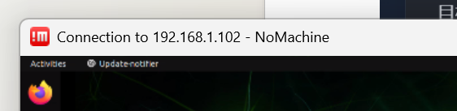
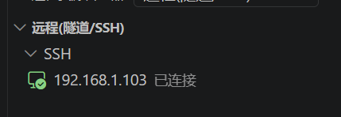
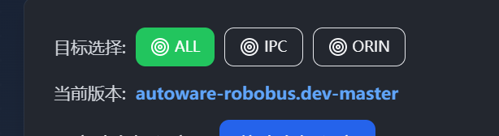
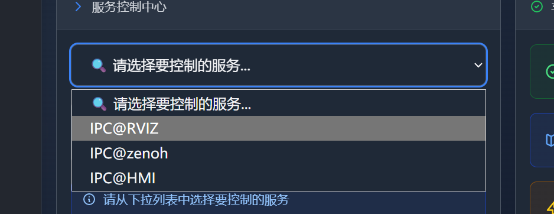
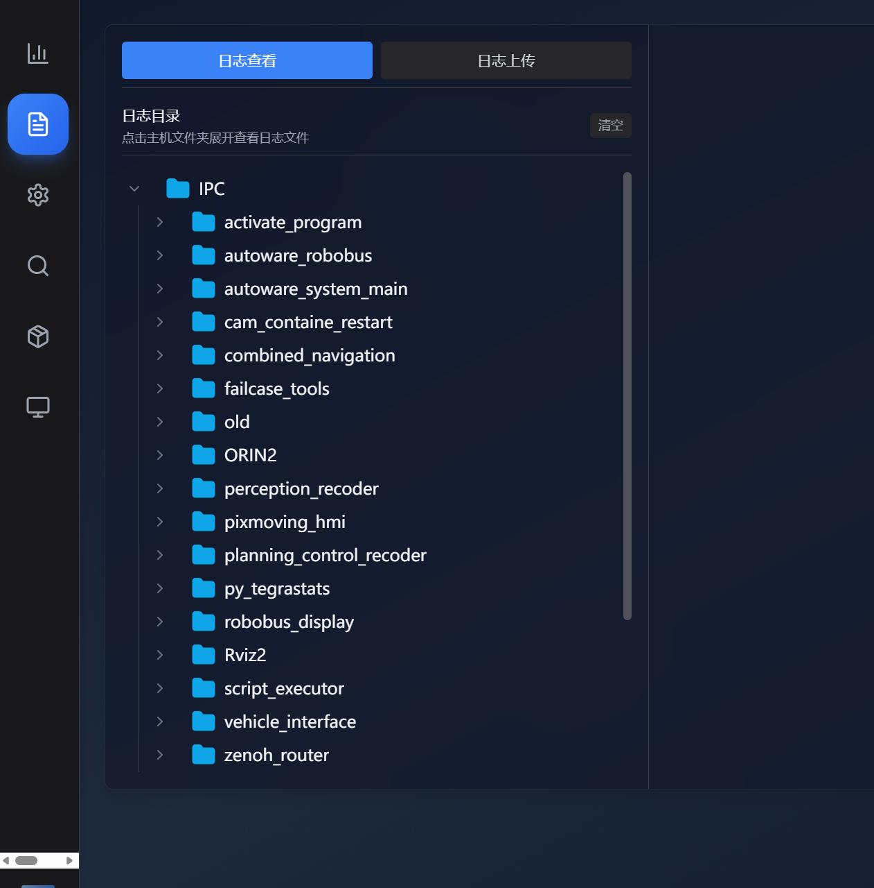

远程运维与开发工具
车载工控机通常安装在车辆内部。工程师需要通过 SSH、NoMachine、VS Code 和文件传输工具远程查看、调试和管理系统。
先确认命令在哪台机器执行
最简单的方法是看终端提示符。Windows、IPC 和 Orin 即使目录名相似，文件和网络环境也不同。
PS C:\...> Windows 本地 PowerShell
ipc@<ipc-host>:~$ 远程 IPC
nvidia@<orin-host>:~$ 远程 Orin / ADCU知识库安全处理：本文只使用 <IPC_IP>、<用户名> 等占位符，不保存真实密码、账号或内部地址。
SSH：安全地操作远程终端
SSH 是 Secure Shell。它通过加密连接，让本地计算机远程登录另一台计算机、执行命令、查看日志和管理服务。服务端通常由 sshd 监听 TCP 22 端口。
ssh <用户名>@<远程IP>
# 只执行一个远程命令并返回
ssh <用户名>@<远程IP> "pwd && ls -la"
# 查看详细连接过程
ssh -vvv -o ConnectTimeout=5 <用户名>@<远程IP>首次连接会要求确认服务器指纹，确认后记录在 known_hosts。密码登录简单；密钥登录使用本地私钥和远程公钥，更适合频繁开发和自动化。
SCP：通过 SSH 安全复制文件
基本格式是 scp [选项] 源 目标。只输入 scp 时显示 usage，不是报错，而是缺少源路径和目标路径。
本地上传到 IPC
scp file.txt <用户>@<IPC_IP>:/home/<用户>/
scp -r project_dir <用户>@<IPC_IP>:/home/<用户>/Windows 主动从 IPC 下载
# 单个文件，不需要 -r
scp <用户>@<IPC_IP>:/remote/path/file.txt "$env:USERPROFILE\Desktop\"
# 文件夹，需要 -r
scp -r <用户>@<IPC_IP>:/remote/path/folder "D:\workspace\"其他常用选项
| 选项 | 作用 |
|---|---|
-r | 递归复制目录。 |
-P 端口 | 指定 SSH 端口，注意是大写 P。 |
-i 私钥 | 指定身份私钥。 |
-C | 传输时压缩。 |
-v | 显示详细过程，适合排查。 |
-p | 尽量保留时间和权限。 |
实践结论：如果 Windows 已能主动 SSH 到 IPC，而 IPC 无法访问 Windows 的 22 端口，最稳妥的是在 Windows 主动运行 SCP 拉取文件，不必为了反向推送额外开放 Windows SSH Server。
sftp 适合交互式浏览和上传下载；scp 适合明确源与目标的一次性复制。
SSH、NoMachine 与 VS Code Remote SSH
| 工具 | 主要用途 | 适合场景 |
|---|---|---|
| SSH | 远程命令行 | 启动服务、查日志、编辑配置、运行脚本。 |
| NoMachine | 完整远程桌面 | 打开 Ubuntu 桌面、RViz、浏览器和图形程序。 |
| VS Code Remote SSH | 本地界面 + 远程文件/终端/编译 | 远程编辑代码、查看项目和调试。 |


NoMachine 只是远程操作工具，不负责自动驾驶；RViz 是自动驾驶可视化软件；HMI 是车辆操作与状态界面，三者功能不要混淆。
Git：版本化管理代码和地图
# 第一次下载远程仓库
git clone <仓库地址> <目标目录>
# 当前目录为空时克隆到当前目录
git clone <仓库地址> .
# 已经是 Git 仓库时检查和更新
git status
git remote -v
git pullGit Clone 用于首次获得一个版本化仓库；Git Pull 用于更新已有仓库；SCP 只是复制文件，不理解提交历史。目录中存在 .git 时，不要再次在同一目录 clone。
Linux 目录与文件基础
pwd # 当前目录
ls / ls -la # 查看文件，-a 包含隐藏文件
cd <目录> # 进入目录
cd .. # 返回上一级
cd ~ # 回到用户主目录
find <路径> -type d -name "名称" # 搜索目录
code . # VS Code 打开当前目录常见错误：map 是目录名，不是命令；要进入目录应使用 cd map。
网络排障要分层
- 确认地址：用
hostname -I、ip addr或 Windowsipconfig找到当前有效网卡。 - 确认路由：用
ip route检查目标网段和默认网关。 - 检查连通：
ping可检查 ICMP，但防火墙可能禁 Ping，所以 Ping 不通不等于 SSH 一定不通。 - 检查端口：
nc -vz -w 5 <IP> 22测试 SSH 端口。 - 检查认证：用
ssh -vvv区分网络、主机指纹、用户名、密码和密钥问题。
| 现象 | 通常表示 |
|---|---|
Connection timed out | IP、路由、防火墙或网络隔离导致请求没有得到回应。 |
Connection refused | 目标主机可达，但 SSH 服务未启动或没有监听该端口。 |
Permission denied | 网络已通，认证用户名、密码、密钥或权限有问题。 |
No such file or directory | 路径或名称错误，先用 pwd、ls -la、find 核对。 |
日志、服务与版本
发现问题后应先确认当前目标主机、软件版本和服务状态，再进入对应日志目录，避免分析错版本或错机器。



常见检查顺序：
- 确认当前版本和启动配置。
- 确认服务或 ROS 2 节点是否启动。
- 确认输入/输出话题、频率、时间戳和 frame_id。
- 查看最新日志和错误发生时间。
- 记录复现步骤、环境和关键状态，再进行修改。